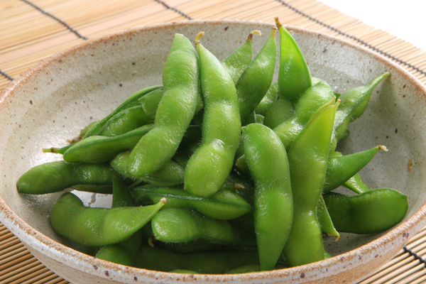

枝豆の栄養素はスゴい
枝豆は大豆が未成熟で収穫したものですが、たくさんの栄養がつまっています。
枝豆のタンパク質に含まれる成分はアルコールを分解を促します。
カリウムも含まれており塩分を体の外に排出する手伝いをしています。
代表的な豆料理
枝豆

枝豆は未成熟の大豆を収穫したもの。枝付きのままゆでたので「枝豆」と呼ばれるようになりました。塩ゆでして食べると非常に美味。しかし塩ゆでするときは沸騰した湯で茹でる。茹で上がった豆を冷水でさらしてはいけない。濃厚な風味がそこなわれることになる。
ずんだ

ゆでた枝豆をすり潰したもの。ずんだを餅にまぶしたものは「ずんだ餅」といって宮城県の特産品です。
主に夏の時期に食べられます。非常に枝豆の風味が良いのが特徴です。。